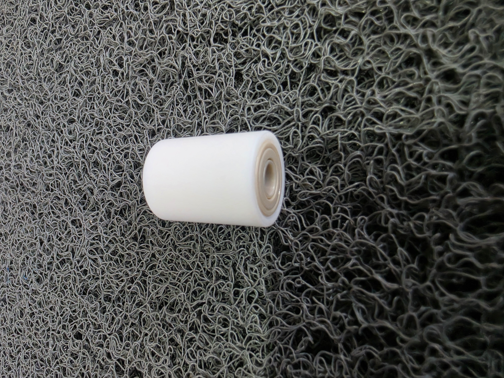
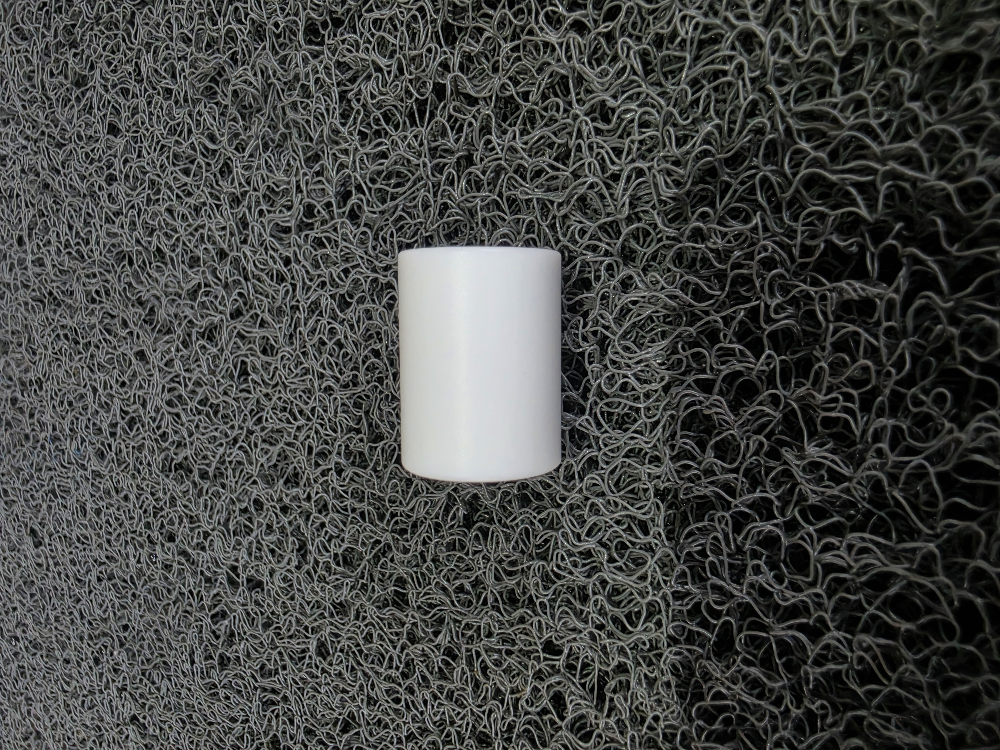
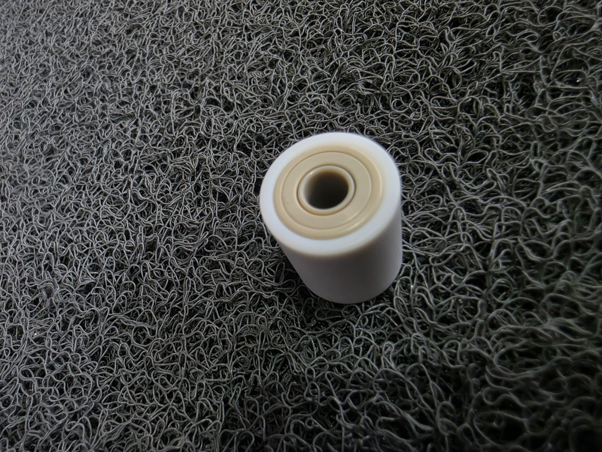
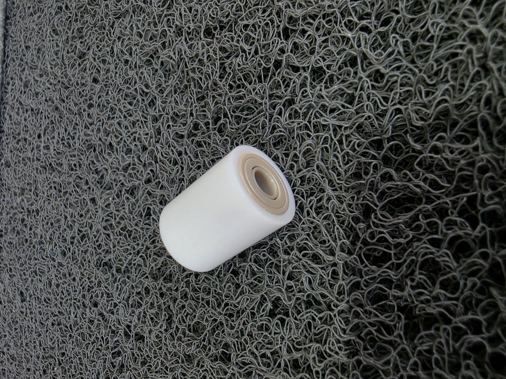
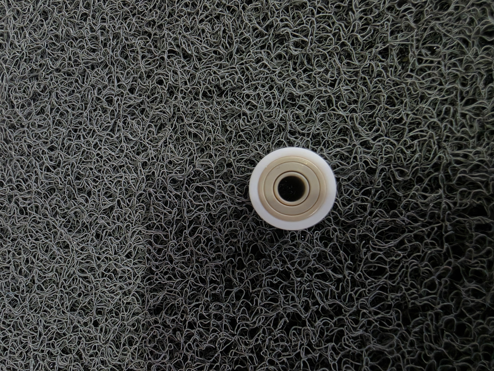

PEEK+PTFE+Si3N4, 세 가지 소재를 한 베어링에 — 커버타입 복열 비규격 특주 볼베어링
박정훈 · KTN KOREA 대표2026.08.07정밀가공 기술 인사이트
베어링 하나에 소재를 하나만 쓰는 게 당연하다고 생각하기 쉽습니다. 사진은 외경 PTFE 테프론 커버 + 복열(2열) 구조 + Si3N4 세라믹볼 + PEEK 리테이너를 조합해 직접 가공한 비규격 특주 볼베어링 실물입니다. 왜 소재를 하나로 통일하지 않고 조합했는지, 이런 구조가 필요한 상황을 정리했습니다.
박
박정훈 · KTN KOREA 대표
20년 베어링 & 정밀 가공 기술 마이스터. 복합 소재 비규격 특주 베어링 정밀 가공 전문가. 도면 없이 현품만으로 역설계·비규격 가공, 누적 실적 2,479건.
포브스코리아 CSV 대상 2026
3종
복합 소재 (PEEK·PTFE·Si3N4)
±0.001mm
가공 정밀도
MOQ 1개
최소 주문 수량
커버타입·복열 구조, 직접 가공한 실물입니다
외경 전체를 PTFE로 감싼 커버타입 구조에, 볼이 두 줄로 배열된 복열 구조를 적용했습니다. 내부에는 Si3N4 세라믹볼과 PEEK 리테이너가 들어갑니다.





PEEK+PTFE+Si3N4 커버타입 복열 볼베어링 — 측면 전체 / PTFE 외경 커버 / 내경 사선·대각선·정면 클로즈업
대상물과 직접 구름·마찰 접촉하는 외경은 비점착성·내약품성이 필요한 경우가 많습니다. PTFE는 이 역할에 적합하지만, 구조체 전체를 PTFE로 만들면 강성·정밀도가 떨어집니다.
02
볼 — Si3N4 세라믹이 담당
회전 정밀도와 내마모성, 비자성이 필요한 볼 자체는 세라믹이 유리합니다. 금속 볼 대비 가볍고 경도가 높아 고속 회전에서도 안정적입니다.
03
리테이너 — PEEK가 담당
볼 간격을 유지하는 리테이너는 고온·내약품 환경에서도 변형이 적어야 합니다. PEEK는 이 조건에서 안정적인 형상 유지력을 제공합니다.
특주 베어링을 파는 회사는 많습니다. 저희는 특주 베어링을 파는 회사가 아니라, 부위별로 다른 소재를 조합해 요구 조건을 동시에 맞추는 회사에 가깝습니다. 삼성SDI·SK하이닉스·LG디스플레이 라인은 물론 HPC·SBB 장비 계열에서도, 소재 하나로는 해결이 안 되는 복합 요구 조건을 다뤄왔습니다.
단일 소재 vs 복합 소재 조합
구분
단일 소재(예: 전체 PTFE)
부위별 복합 소재 조합
구조 강성·정밀도
전체가 무른 소재라 정밀도 유지 어려움
부위별 최적 소재로 정밀도 확보
외경 접촉 특성
단일 소재 특성에 한정
PTFE 커버로 접촉면만 별도 최적화
제작 난이도
단순
소재별 가공·조립 공정 관리 필요
모든 상황에 복합 소재가 정답은 아닙니다. 요구 조건이 한 가지 소재로 충분히 해결된다면 단일 소재가 단가·제작 난이도 면에서 유리합니다.
복합 소재 특주 베어링 발주 전 확인할 것
✓
부위별 요구 조건 구분
외경 접촉 특성, 볼 하중·회전 조건, 리테이너 환경을 각각 정리
✓
단열 vs 복열 필요 여부
축 방향·모멘트 하중이 큰 경우 복열 검토
✓
현품 또는 도면 확보
내경·외경·폭 실측 치수와 설치 환경 사진 공유
발주 전 30초 체크 — 지금 검토 중인 베어링에서 "외경 접촉 특성"과 "볼·리테이너 조건"이 서로 다른 요구인지 확인하십시오. 둘 다 같은 소재로 충분하다면 단일 소재가 낫고, 요구가 서로 다르다면 복합 소재 조합을 검토할 시점입니다.
자주 묻는 질문
커버타입 베어링이란 무엇이고 언제 필요한가요?
커버타입은 베어링 외경 전체를 별도 소재(여기서는 PTFE)로 감싸 완전히 매끈한 원통형 외관을 만드는 구조입니다. 롤러처럼 대상물과 외경 전체가 직접 접촉·구름 운동하는 용도, 또는 외경 쪽에 내약품성·비점착성이 필요한 환경에서 사용합니다.
복열(2열) 베어링은 단열 베어링과 무엇이 다른가요?
복열은 볼이 두 줄로 배열된 구조로, 단열 대비 축 방향 하중과 모멘트 하중을 더 안정적으로 지지할 수 있습니다. 폭이 넓어지는 대신 하중 지지력과 회전 안정성이 높아져, 편심 하중이 걸리거나 흔들림을 줄여야 하는 용도에 사용됩니다.
왜 PEEK·PTFE·Si3N4 세 가지 소재를 한 베어링에 조합하나요?
각 소재가 담당하는 역할이 다릅니다. Si3N4(세라믹) 볼은 경량·고경도·비자성으로 내마모성과 회전 정밀도를 담당하고, PEEK 리테이너는 볼 간격을 유지하며 고온·내약품 환경에서도 안정적입니다. 외경의 PTFE 커버는 접촉 대상과의 마찰·점착 문제를 낮춥니다. 하나의 소재로는 세 가지 요구를 동시에 만족시키기 어려운 환경에서 조합합니다.
이런 복합 소재 비규격 베어링도 주문 제작이 가능한가요?
가능합니다. 현품이나 도면을 기준으로 내경·외경·폭, 열 수(단열/복열), 소재 조합을 확인 후 비규격으로 제작합니다. 정확한 납기는 규격과 소재 조합에 따라 달라지므로 현품 사진과 치수를 공유해 확인하는 것이 안전합니다.
부위별 소재를 나눠 설계·조립하는 복합 소재 베어링은 건마다 요구 조건 분석이 필요해, 월 단위로 받을 수 있는 신규 건수를 제한하고 있습니다. 단, 단일 소재로 충분한 조건이라면 이 조합 자체가 필요 없습니다 — 꼭 KTN이 아니어도 됩니다.
간편 견적 요청
규격·하중 조건·사용 환경만 남겨주시면 확인 후 연락드립니다. 제출 내용은 담당자 이메일로 바로 전달됩니다.